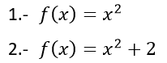
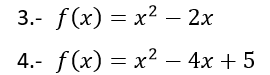
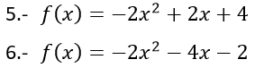
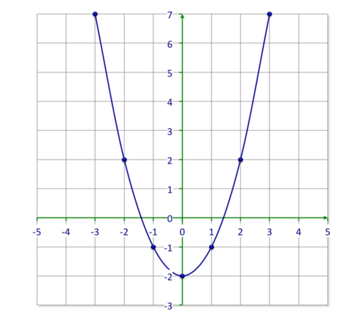

Actividad 2
A continuación, seguimos paraboleando. Recordamos que para dibujar una gráfica partiremos de su expresión analítica f(x), generaremos una tabla de valores y representaremos los puntos obtenidos en los ejes cartesianos para, finalmente, unirlos y dibujar la gráfica.
Seguidamente, practicaremos dibujando unas parábolas:
Nivel inicial: Nivel medio: Nivel avanzado:
  
 Ánimo, seguro que te quedarán muy bien las gráficas!!!!
Ánimo, seguro que te quedarán muy bien las gráficas!!!!
Lectura facilitada
Pasos para dibujar una gráfica:
- Crear tabla de valores.
- Poner los puntos en los ejes cartesianos.
- Unir los puntos.
Apoyo visual

Lumen dice... Necesito ayuda
Si necesitas ayuda, en el siguiente video puedes recordar como se dibuja una gráfica a partir de la expresión analítica.
Puedes comprobar tus resultados en el siguiente simulador GeoGebra.